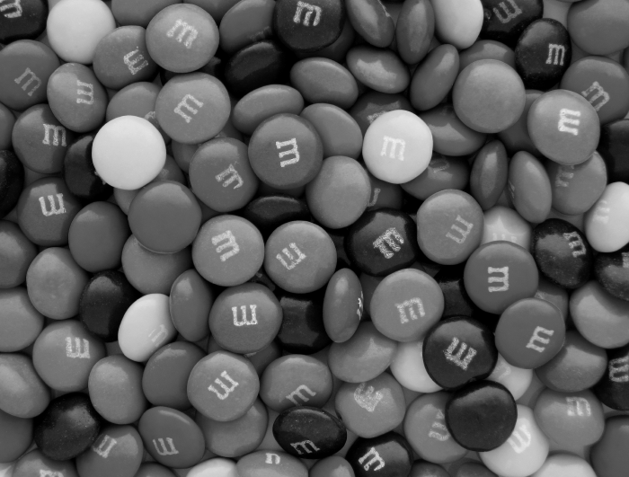

전색맹은 색을 전혀 인식하지 못하는 시각 장애입니다.
이상적인 색인식 능력을 가진 사람들과는 달리, 전색맹인 사람들은 세상을 흑백으로 인식합니다.
전색맹은 흑백 또는 명암 차이로만 시각 정보를 인지하며, 색조나 채도의 차이를 구별할 수 없습니다.
전색맹은 일반적으로 말하는 색맹과는 구별됩니다.
보통 색맹은 특정 색상을 인식하는 능력이나 색상 간의 구별 능력이 제한적인 경우를 말하며, 대표적으로 적색맹과 녹색맹이 있습니다.
하지만 전색맹은 색상 자체를 인식하지 못하는 것이 특징입니다.